The collection
All works
Every piece in the collection by Briar Morgan Greenway — 195 works, newest first. Open one to read about it, then hang it on a wall at its real printed size.
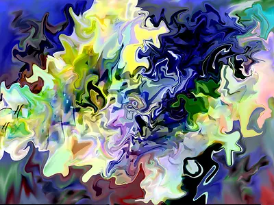
Weather Inside a Marble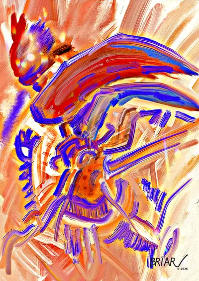
The Firebird Learns Geometry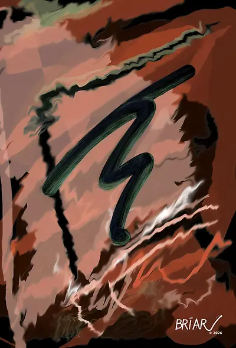
A Crack Taught to Write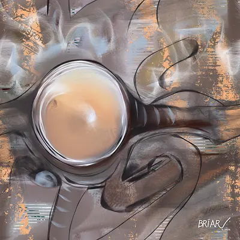
Porthole, Lukewarm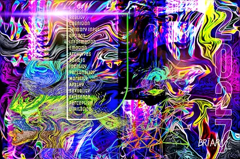
Inventory of a Self Camouflage for Deep Water
Camouflage for Deep Water Oil Slick Dreaming of Orchids
Oil Slick Dreaming of Orchids The Zipper Between Two Oceans
The Zipper Between Two Oceans Night Market, Crossed Out
Night Market, Crossed Out The Beetle Reads Its Own Pulse
The Beetle Reads Its Own Pulse Afterparty at the Edge of the Galaxy
Afterparty at the Edge of the Galaxy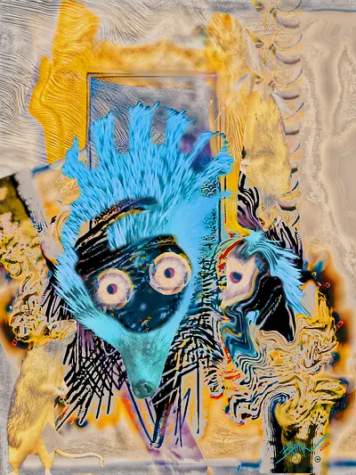
The Startled One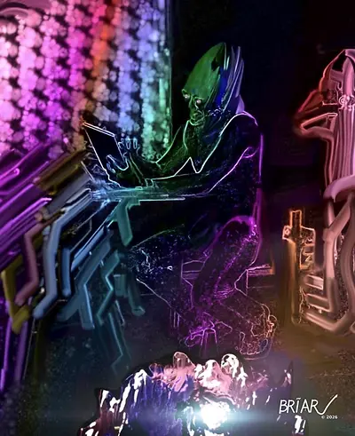
Remote Work, Very Remote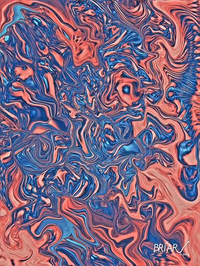
Coral Arguing with the Tide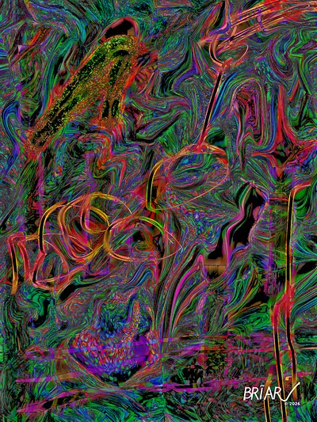
Neon Undergrowth, 3 a.m.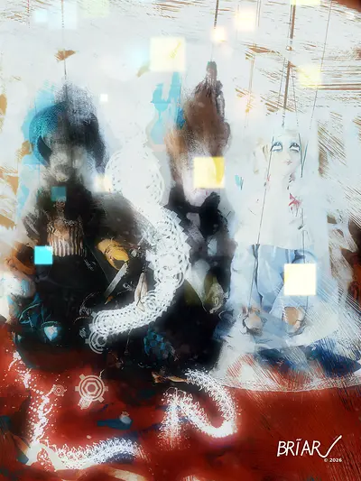
Séance in the Waiting Room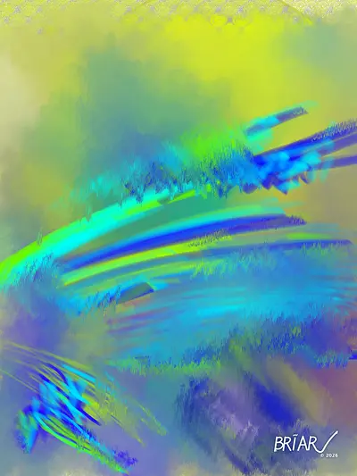
A Meadow at Mach One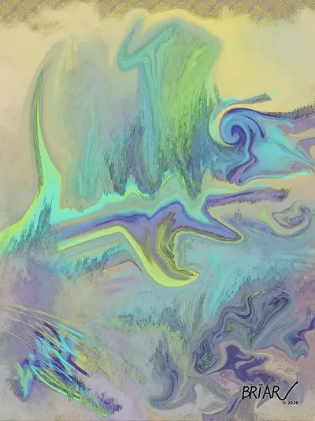
Low Tide in a Pastel Country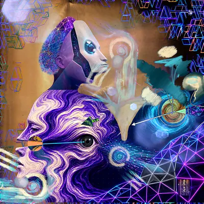
Diagram of a Thought Leaving the Head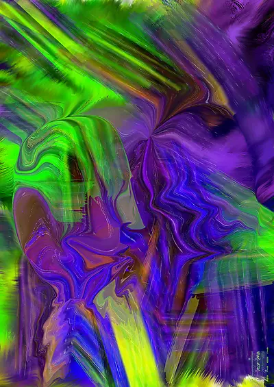
Green Lightning, Violet Room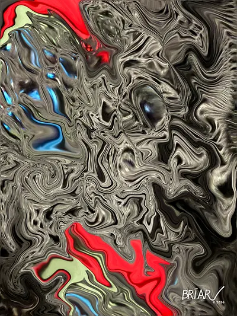
Mercury with a Paper Cut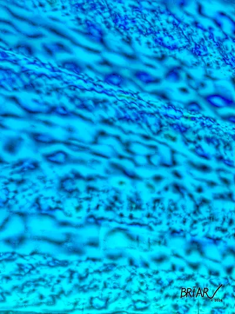
Pool Skin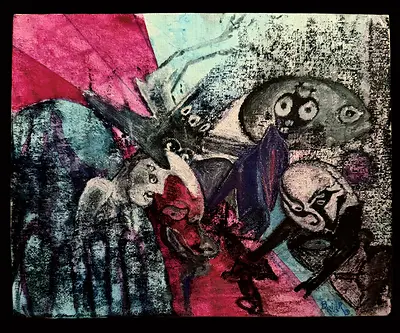
Small Witnesses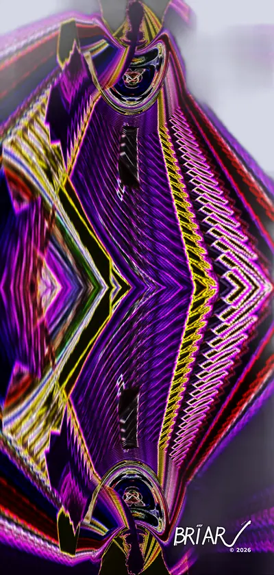
Cathedral for a Synthesizer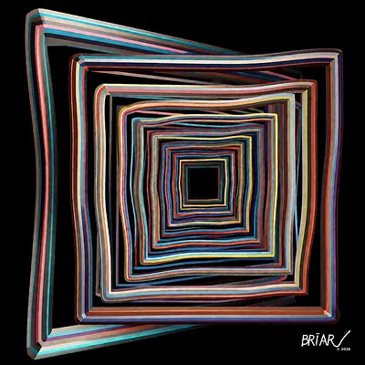
A Square Remembering Itself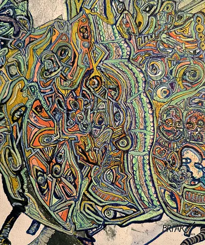
Everyone in Here Is Looking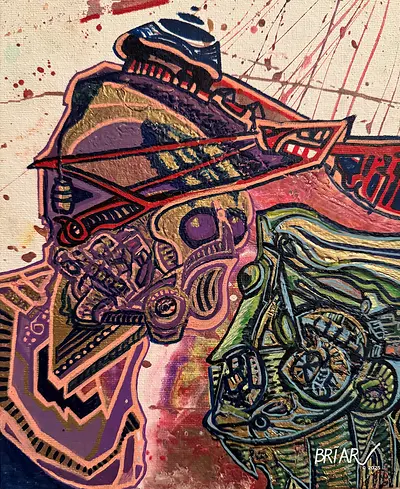
Conductor and Passenger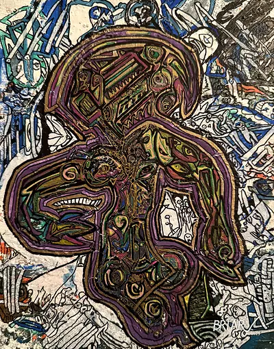
Four-Leaf Engine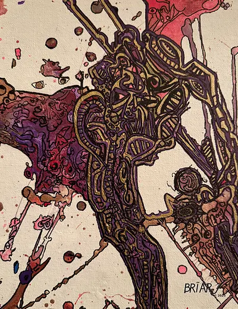
The Spill Grew Circuitry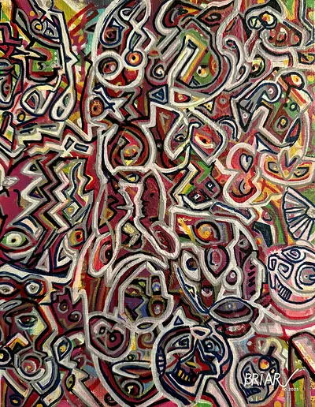
Crowd Scene, Red Thread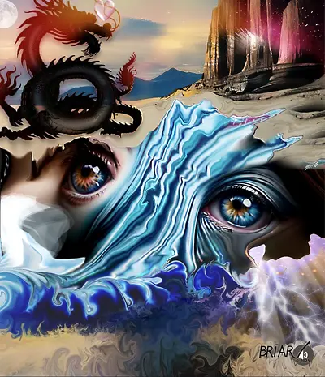
The Wave Has Two Eyes and One Dragon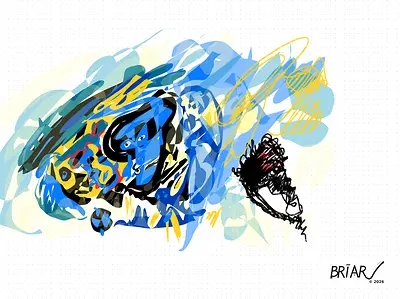
Blue Thought, Black Afterthought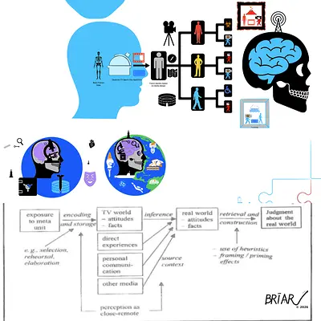
How the Television Gets In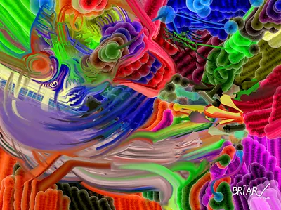
Candy Reef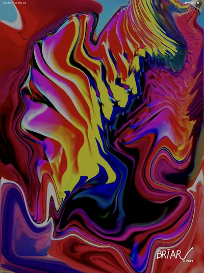
Profile in Molten Sunset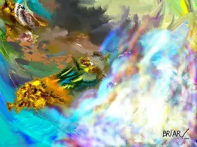
Gold Leaf Lost at Sea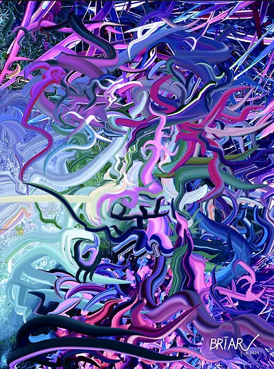
Ribbons Refusing to Be a Bow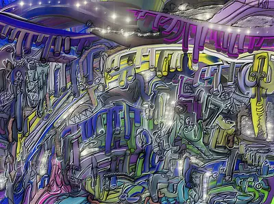
Arcade Under the Aqueduct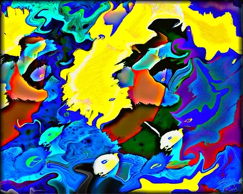
Three Birds Swimming Through Paint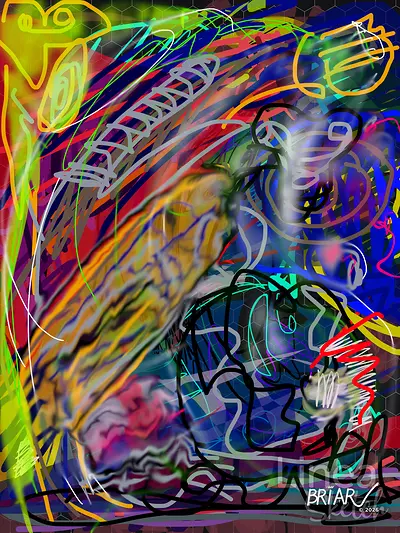
Everything I Drew Before Breakfast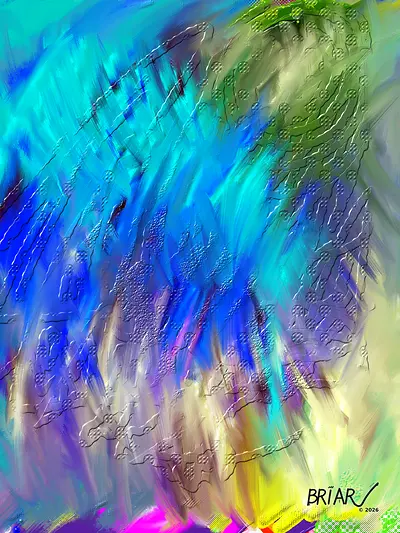
Parrot Weather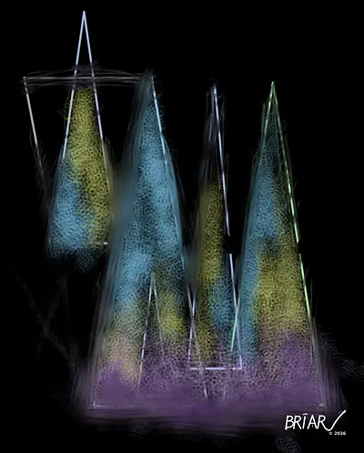
Four Tents Pitched in the Dark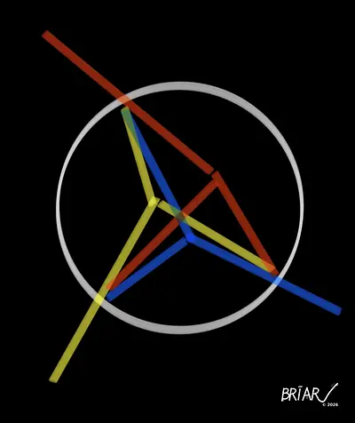
Compass for Somewhere Else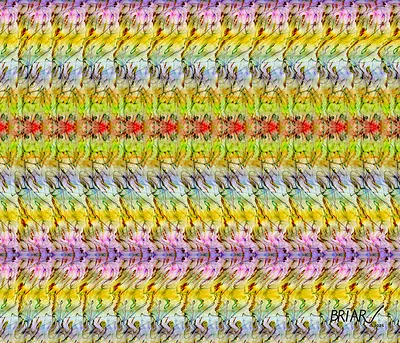
Wallpaper for a Room That Hums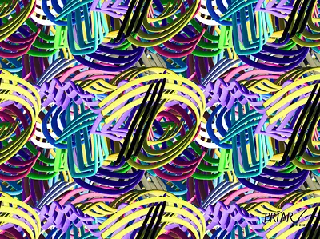
Loop Season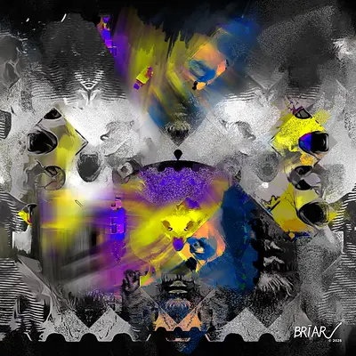
Harlequin Static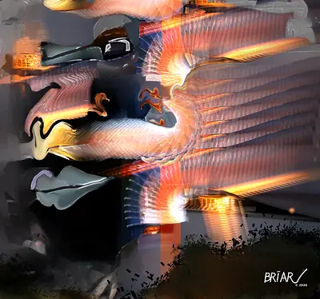
Lips at Ninety Miles an Hour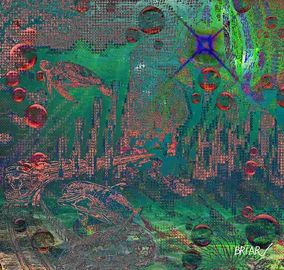
Low Tide at the Train Yard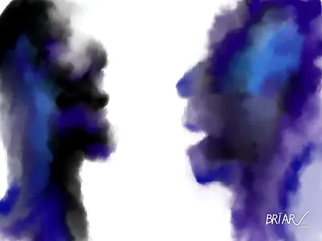
Two Clouds Having a Conversation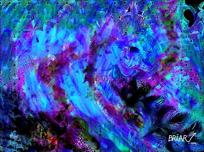
Deep Water Paisley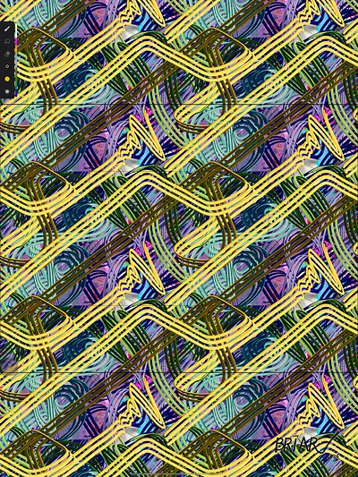
Yellow Rope Mathematics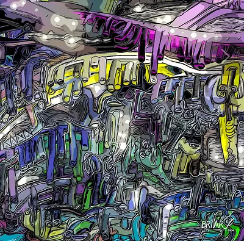
The City the Machines Built for Themselves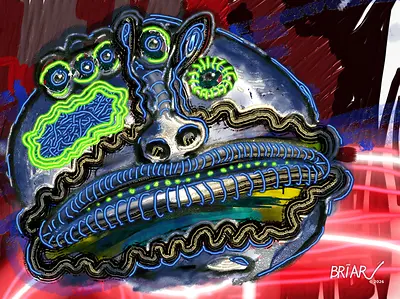
Grin of the Trilobite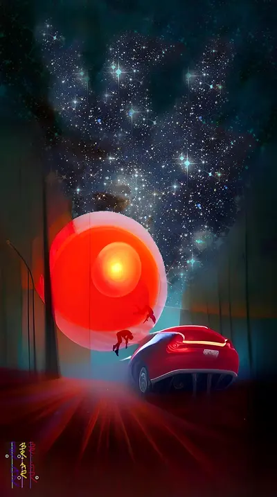
The Orb Was Already There When We Pulled Over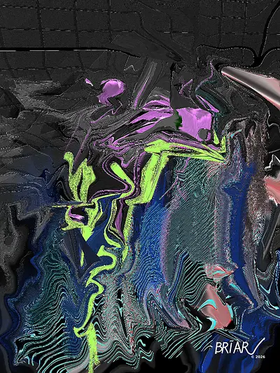
Lime Vein in Grey Country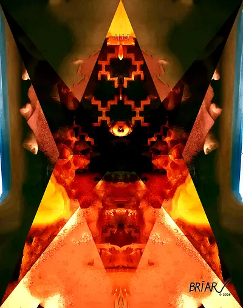
The Eye in the Furnace Door- Lava Wearing Silk
- A Hand Made of Embers
- Magenta District, After Curfew
- Upside-Down City, Outlined in Lightning
- Upside-Down City, Corrupted File
- Upside-Down City, Pink Leak
- Reef Under Construction
- Every Synapse at Once
- Open The
- Pink Canyon with Teeth
- Spider's Planetarium
- Six Sides of a Sunrise
- Two Golden Idols Find a Marble
- Rorschach for Orchids
- Keys Dropped in the Deep End
- Ultraviolet Skin
- Skyline, Thawing
- Constellation Laid Over a Mountain
- Dice, Cards, and a Look
- Twin Guardians of the Black Door
- Agate, Printed in Halftone
- Wildflowers on Fire, Unbothered
- Keys at the Bottom of the Bowl
- Rose with a Pearl in Its Throat
- The Dancers Dripped
- X-Ray of a Theater Curtain
- Totem in a Purple Downpour
- Sunrise Over the Motherboard
- Brass Rain
- Flamingo Dissolving in the Pool
- Something Bright Behind the Red
- Mint, Lilac, and the Morning After
- Blue Paper Storm, One Straight Line
- The Turtle Crosses the Train Yard
- Small Slab of Weather
- Pond Seen Through Frosted Glass
- Mask for the Festival of Heat
- Flame Standing Up in a River
- Portrait Pulled Through Moss
- The Fur of a Glacier
- This Is Not a Cliff
- Small Slab of Weather, Escaping
- Sherbet Reef
- Greed Is Your God
- Blacklight Reef
- Three Channels of the Same Night
- Pressed Flowers, Rusting
- Small Slab of Weather, Captured
 The Keys, Surfacing
The Keys, Surfacing- Three Blue Tears on a Yellow Screen
- Moth, Remembered Wrong
- Circuit Board Having a Dream
- Sunset, Scratched Into
- Angel Seen Through a Fogged Window
- Record of a Pond
- Chandelier of Coordinates
- Record of a Pond, Skipping
- Jade Staircase with a Pink Secret
- Coals Under a Pewter Sea
- Two Figures Inside the Red Sun
- Golden Insect Deity, Front View
- The Pool, a Minute Later
- The Same Scribble, Forgiven
- A Mouth Full of City
- Magenta Skin
- Upside-Down City, Negative
- Furnace Door at Warp Speed
- Snow Leopard, Disassembled
- Citrus Supernova
- The Same Constellation, in Cold Water
- Two Clouds Having an Argument
- Masked One, Crowned in Frequencies
- Peach Skin, Deep Water
- High on Oxytocin
- Orchid Frieze on a Dead Channel
- Fathom, on the Steps
- Target Practice for a Sun
- Horse in a Violet Wind
- Swamp Under a Magenta Sky
- Geode with a Blue Yolk
- Purple Seer, Weeping Light
- Tangerine Vein in Opal
- Woodpecker over a Pink Sun
- Rush Hour, Long Exposure
- Man Reclining with Rooster
- Stained Glass, Still Liquid
- Moon Caught in Honey
- Spider's Planetarium, Lights Out
- Kaleidoscope of a Swimming Pool
- Avocado-Eyed Sentinel
- The Monk of Parallel Lines Meets the Chrome
- The Horse Dreams It Is Lying Down
- Tiger Totem, Liquid State
- The Monk of Parallel Lines
- Night Drive Through the Magenta District
- Light on the Floor of a Shallow Sea
- Barns at the End of the Day
- Blue Paper Storm, After Dark
- A Loud Shape on a Quiet Wall
- Pressed Flowers, Still Green
- The Horse's Eye, Closer
- Dark, It Said, and Melted
- Record of a Pond, Watching Back
- The Hour Assembles Itself Over the Desert
- Heat Rising Through a Pattern
- Shattered Aquarium, Fine Print
- Portrait Hung in the Sky Above the Sea
- Half the Valley Has Already Melted
- Aquarium, Remembered in Sepia
- The Horse Dreams It Is Upside Down
- Hexagon Giving Off Sparks
- Out of Focus on Purpose
- Record of a Pond, in Daylight
- The Drain at the Center of the Sunset
- The Keys, Finally Framed
- Porcelain Weather
- Melting Giants Above the Desert Road
- Violet Thicket with Gold Leaks
- The Crown Hovers While the Court Melts
- The Same Angel, Running a Fever
- Pinwheel for a Windless Day
- Girders of an Orange Cathedral
- The Keys Grow a Tail
- The Keys Become a Crab
- Three Tears in a Violet Snowfall
- Spectacles Lost in a Cloud
- Four Sparks Underwater
- A Glass of Something That Remembers
- The Totem Tunes to Every Channel
- No Return Groceries & Mart
- Three Tears on a Mint Screen
- The Same Constellation, Blushing
- The Keys Meet a Swordfish
- The Keys Grow a Face
- Rush Hour, Bleached
- Midnight Agate
- Lizards Crossing a Lava Field
- The Black Door, Left Open
- Bright Nerves Spilled on Concrete